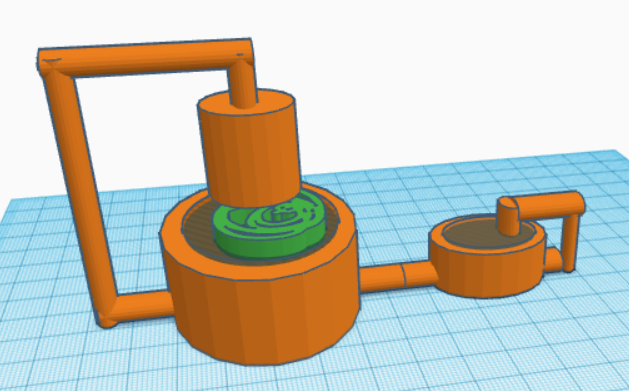
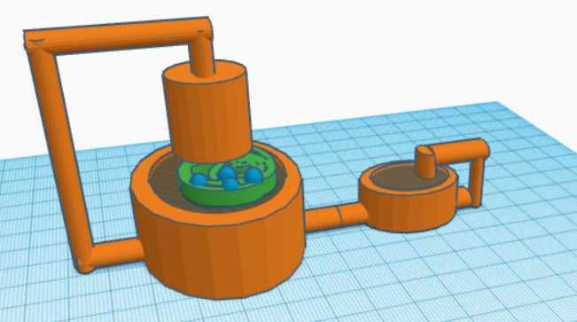
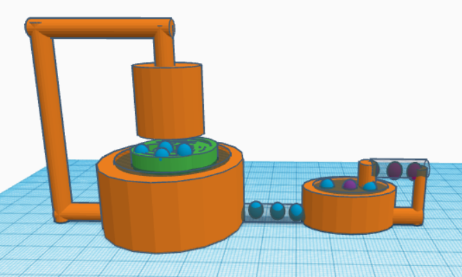
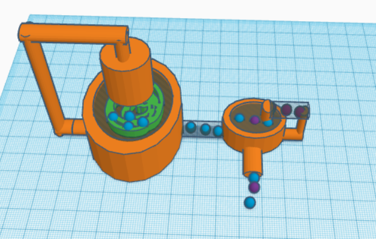
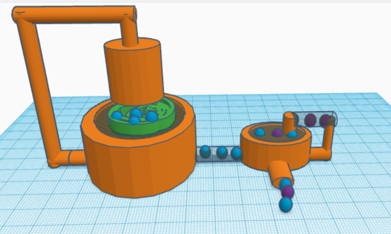

Step #1:
After harvesting, the stubble that is left over is dried and coarsely ground

Step #2:
The stubble is then placed in the main barrel of the compression system, which runs on a motor powered by solar cells (a separate arrangement)
Step #3:
The container vessel slowly rotates as force is applied upon the stubble

Step #4:
Natural oils are extracted and diverted to another pipe

Step #5:
This product is then combined with ethanol (externally sourced) and/or other forms of oil to dilute it

Step #6:
The final product is bio-oils. This will have primarily domestic applications, and can be sold as well
Step #7:
Stubble residue after the extraction of oils is further processed by drying and grinding, and is
then sold to manufacturing industries as a raw material for sustainable goods like bricks